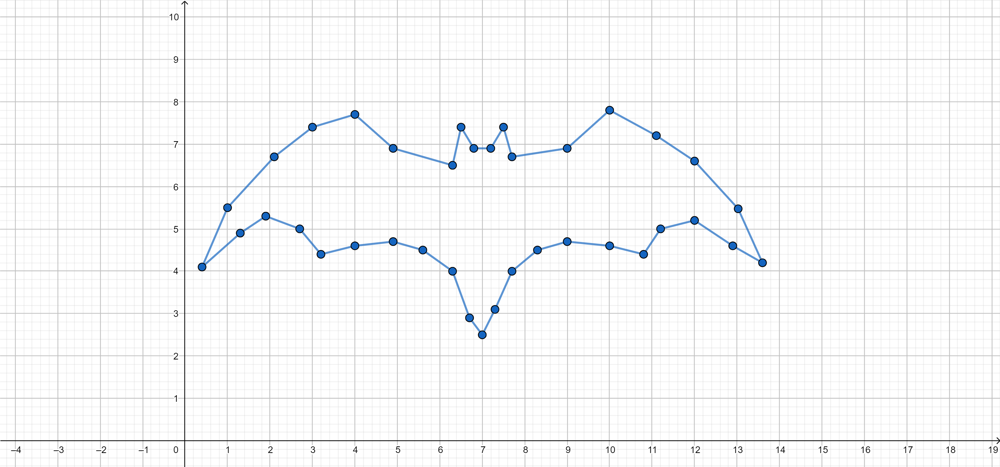

El Vigía Ambiental
Los vigías ambientales son importantes, ya que actuan como veedores del medio ambiente en el interior
de la institución, esto lo hace hacesorando a los estudiantes, el gobierno escolar y en general a todo el
colegio para tener un mejor marco ambiental en el colegio.
Sistema de Referencia
"El Plano Cartesiano, pero ahora finalmente se le agrega una cosa nueva"
El Sistema de Referencia, es cuando en un punto fijo de cualquier cosa, terreno, objeto, etc. Se le asigna un Plano Cartesiano,
como en el plano cartesiano, cada punto del sistema de referencia o del objeto, se le anota dos valores, una
ordenada y una abscisas, o en la cultura general, coordenada X y Y.
Ahora estos sistemas se usan para que nosotros, cómo observador, podamos medir la posición, magnitudes y otras de un objeto.
Esto nos puede ayudar al tener unas medidas de referencia, cómo tamaños o movimientos.
Un ejemplo es ver una nave de SpaceX ascender, para quien lo este viendo desde la superficie. Puede ver que esta
asciende y le quema todo el cuerpo por estar cerca de la nave al despegar. Mientras que una persona en el espacio o en la luna,
si pudiera ver el cohete despegar, cosa que no va a hacer porqué va a explotar a medio camino. Vería este cohete muy pequeño,
con un movimiento lento y distante. Estas dos perspectivas cambian por el Sistema de Referencia que ambos estan usando.
Mientras uno usa un sistema con medidas muy pequeñas, como es cm y m, el otro sistema podría usar medidas como
Ym y Años luz.
Obtener Medidas en el Plano Cartesiano
Para obtener estas medidas, debemos primero tener unas figuras en el plano cartesiano (cosa cómo obvia, no?). Para
hacer esto debes tener un minimo conocimiento de posicionamiento de Coordenadas, visto en Matemáticas o Sociales.
Perímetro
Para obtener el perimetro, debemos saber los lados que tiene todo la figura geometríca. Listo ahora que los tenemos,
debemos saber cuando miden cada uno de estos, para esto vamos a tener de hacer uso de una formula ya reconocida pero
adaptada a nuestra situación. Vamos a hacer uso del Teórema de Pitagoras, es decir:
√a2 + √b2 = h;
Las modificaciones que le vamos a hacer van a ser estas:
√(x0 - x1)2 + √(y0 - y1)2 = h;
Esto que carajo significa??? significa que la diferencia entre la 1ra coordenada X y la 2da coordenada X,
vamos a obtener una tercera coordenada, esta es que tanto se desplazo la coordenada X, dandonos un valor de distancia
del cateto 1. Lo mismo se hace con las coordenadas Y, que tanto se desplazo y blah blah blah.
Con estos valores vamos a hacer uso del teorema de pitagoras y obtendremos la distancia entre la 1ras coordenadas y las 2das
coodenadas. Este es un proceso muy muy complejo de hacer esto, pues debemos tener variado conocimiento y una parte dura
del proceso, sobre todo es mucho más complejo que "medir" las lineas manualmente entre cada vertice, cosa inerentemente
ineficiente, imprecisa y sobretodo un poco estupida. Por eso voy a usar el metodo dificil y complejo, largo y blah blah.
Pero yo no lo voy a hacer, el navegador lo va a hacer por mí. Y yo voy a hacer el Script para
que me lo haga el navegador.
Quiere ver él código que se ejecuto para hacer el punto del perimetro? Puede verlo en el Repositorio de GitHub
O verlo acá
Área
Para obtener el Area de Batman, vamos a tener que recurrir a un metodo no tan dificil como el anterior, el contar los
cuadritos de toda la figura, pero esto lo voy a acelerar haciendolo en cuadrados.
Vamos a dividir estos cuadraditos en 4 categorias o medidas:
- miniCuadrado 1x1 de estos (mc)
- cuadrado 5x5 de miniCuadrados (c)
- hiperCuadrados 5x5 de cuadrados (hc)
Link del Video Usado para la Información
El Vigía Ambiental
| Curso |
1003 Jornada Tarde |
Estudiante |
Martín Steven Hernández Ortiz |
| No. de Documento |
1.013.107.870 |
Telefono |
313 3391259 |
| Correo Electronico |
martinstevenhernandezortiz@gmail.com |
Fecha de Entrega |
04/01/2021 |
Una de las primeras actividades que se realiza en el Colegio Maria Mercedes Carranza es la conformación del
gobierno escolar y la elección del Vigía Ambiental. Para el siguiente cuadro completar la importancia de cada
cualidad para ser Vigía Ambiental.
Completar el Cuadro con la información que piense que debería ser puesta.
|
Amar a su colegio y mantenerlo limpio y agradable
|
... así podemos tener un ambiente efectivo y bueno para poder aprender de la mejor forma, sin
tener que preocuparnos de tener algún problema con estos problemas.
|
|
Tener cariño por las plantas y los animales
|
... son la base de nuestra existencia como humanidad y personas, ya que sin estos no
podríamos tener la mayoria de cosas que tenemos hoy en día. A las plantas y a los animales
deberíamos darles más respeto y cariño por todo lo que nos dan.
|
|
Ser ordenado, responsable y Amable
|
... es la unica forma de ser una excelente persona, y esto es la base de la buena moral, etica y
vida de cualquier persona. Solo con ordenado en tanto aspectos físicos, cómo nuestra casa y cuarto, hasta aspectos
metafísicos como el tiempo, pensamientos, metodologías, entre otros.
|
|
Respetar la Tierra y el Agua
|
... igual que los animales y las plantas, son lo que nos permite ser lo que somos hoy en día, de hecho el agua
es el "combustible" de nosotros los humanos. Y además de que si no hacemos un esfuerzo colosal como para poder llegar
a otros planetas de una forma rapida y no tan cara, son los unicos recursos que son los unicos que vamos a poder usar
en toda nuestra existencia.
|
|
Sentir curiosidad y deseos de Aprender
|
... es la unica base del progreso y exito en la vida. El no parar de aprender es una de las mejores virtudes que
existe en el ser humano, ya que podemos centrar todo nuestro potencial a crear, investigar o mejorar diferentes cosas,
pueden ser de nosotros mismos, de nuestra comunidad o de toda la humanidad.
|
BATMAN nananananana
| Curso |
1003 Jornada Tarde |
Estudiante |
Martín Steven Hernández Ortiz |
| No. de Documento |
1.013.107.870 |
Telefono |
313 3391259 |
| Correo Electronico |
martinstevenhernandezortiz@gmail.com |
Fecha de Entrega |
04/02/2021 |
El punto del extremo izquierdo del ala de batman tiene coordenadas 0,4 horizontal y 4,1 vertical. IDENTIFICAR las
coordenadas de los demás puntos comenzando como indican las flechas y completar la tabla de datos.
Hay 37 vertices en BATMAN
| 0.4 |
4.1 |
| 1.3 |
4.9 |
| 1.9 |
5.3 |
| 2.7 |
5 |
| 3.2 |
4.4 |
| 4 |
4.6 |
| 4.9 |
4.7 |
| 5.6 |
4.5 |
| 6.3 |
4 |
| 6.7 |
2.9 |
| 7 |
2.5 |
| 7.3 |
3.1 |
| 7.7 |
4 |
| 8.3 |
4.5 |
| 9 |
4.7 |
| 10 |
4.6 |
| 10.8 |
4.4 |
| 11.2 |
5 |
| 12 |
5.2 |
| 12.9 |
4.6 |
| 13.6 |
4.2 |
| 13 |
5.5 |
| 12 |
6.6 |
| 11.1 |
7.2 |
| 10 |
7.8 |
| 9 |
6.9 |
| 7.7 |
6.7 |
| 7.5 |
7.4 |
| 7.2 |
6.9 |
| 6.8 |
6.9 |
| 6.5 |
7.4 |
| 6.3 |
6.5 |
| 4.9 |
6.9 |
| 4 |
7.7 |
| 3 |
7.4 |
| 2.1 |
6.7 |
| 1 |
5.5 |
Gráfico Hecho en GeoGebra

Batman Azul, hecho por Martín Hernández.
Link de Batman en GeoGebra
Con la figura ahora hecha vamos a obtener las siguientes medidas de
Batman.
Perímetro de Batman
Área de Batman
El Área de Batman es: 2818 mini Cubitos (aproximadamente)
(76c * 52) + 918 mc = (76c * 25) + 918mc = 1900mc + 918mc = 2818mc;